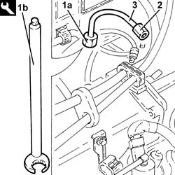
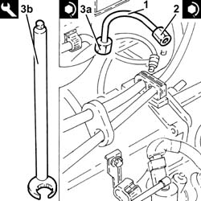

1060F34 lines to injectors - r r
- Path
- Procedures > 10 ENGINE > 1060 DIESEL FUEL INJECTION > 1060F injectors and lines > 1060F34 lines to injectors - r r
- Kind
- repair procedure (removal / refitting; the operation number is the code)
- Applies to
- all engines; all production periods
- Interactive page
- https://sloeber94.github.io/elrnDB-fDbl/en/#/2584408
Applies to: all engines; all production periods
Proceed as described in bearing in mind that you are only working on one of the pipes in question.
Applies to: all engines; all production periods
 Removing
Removing
 Refitting
RefittingProceed as described below for the pipe from fuel manifold to 1st cylinder injector.
Proceed with the removal 1060F50 fuel return manifold - r r .
Proceed as described below for the pipe from fuel manifold to 2nd, 3rd and 4th cylinder injector.
Proceed with the removal 1044B10 fuel filter assembly - r + r or replace .
Proceed with the removal 1080C24 e.g.r. system solenoid - r + r .
Do the same thing for any pipe from the fuel manifold to the injector.
1. Undo the connector for the pipe from fuel manifold to injector (1a), fuel manifold side, using tool (1b).
 | Name | Country |
|---|---|---|
1b | Key | 1.870.671.000 |
2. Undo the connector for the pipe from the fuel manifold to the injector, injector side, using a suitable commercial wrench.
3. Remove the pipe from fuel manifold to injector.

Applies to: all engines; all production periods
Refitting
Removing1. Refit a new pipe from the fuel manifold to the injector and secure them using the connectors without tightening them.
2. Tighten the connector for the pipe from the fuel manifold to the injector, injector side, to torque using a suitable commercial wrench.
 | Fastening | Component | Ø | Value (daNm) |
|---|---|---|---|---|
2 | Connector | FUEL MANIFOLD LINE TO INJECTORS | M12 | (Injector side) 2.2 ÷ 2.4 |
3. Tighten the connector for the pipes from the fuel manifold to the manifold side injector (3a) to the recommended torque using tool (3b).
| Fastening | Component | Ø | Value (daNm) |
|---|---|---|---|---|
3a | Connector | FUEL MANIFOLD LINE TO INJECTORS | M14 | (Fuel manifold side) 2.2 ÷ 2.4 |
| Name | Country |
|---|---|---|
3b | Key | 1.870.671.000 |

Applies to: all engines; all production periods
Proceed as follows for the pipe from fuel manifold to 2nd, 3rd and 4th cylinder injector.
Proceed with the refitting 1080C24 e.g.r. system solenoid - r + r .
Proceed with the refitting 1044B10 fuel filter assembly - r + r or replace .
Proceed as follows for the pipe from the fuel manifold to the 1st cylinder injector.
Proceed with the refitting 1060F50 fuel return manifold - r r .